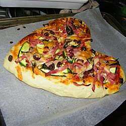

Pizza

Description
Another Italian dish that I love
Ingredients
- 3 cups bread flour
- 1 (.25 ounce) envelope active dry yeast
- 1¼ cups warm water
- 3 tablespoons extra virgin olive oil, divided
- 3 tablespoons chopped fresh rosemary
- 1 (14 ounce) can pizza sauce
- 3 cups shredded mozzarella cheese
- 2 ripe tomatoes, sliced
- 1 zucchini, sliced
- 15 slices vegetarian pepperoni
- 1 (2.25 ounce) can sliced black olives
Steps
- Place bread flour, yeast, water, and 2 tablespoons olive oil into the bread machine pan in the order recommended by the manufacturer. Select the Dough setting. Press Start. When the dough is finished, knead rosemary into the dough.
- Preheat oven to 400 degrees F (200 degrees C).
- Divide the dough into three portions. Shape each piece into a heart shape about 1/2 inch thick. Brush with remaining olive oil, and spread a thin layer of pizza sauce on each pizza. Sprinkle cheese over pizza sauce, and arrange tomatoes, zucchini, pepperoni, and sliced olives on top.
- Bake for about 15 to 20 minutes, or until cheese has melted and crust is browned.